The stage is a clapper slate. Dimensional-tactile. Drawn from a 1992 Filmklappe, two wooden lay figures, a pencil storyboard page and a tennis ball on a C-stand.
Palette
slate #3f4044
slate shadow #1e232b
chalk #f6f7ef
chalk dust #c7c7b7
chalk haze #6f6c6b
paper #f5f6e5
pencil #585752
wood light #d9ac8b
wood #a37a60
wood dark #64453e
optic yellow #d6e13c
tally red #e0352b
Type
Block the shot
Big Shoulders Stencil 900, the one loud line
LENS35 mm
EYELINE Alook up 28 deg, eye 1.7 m above, 3.2 m away
SHOTS3 of 6
Stencil 700 labels, Big Shoulders 500 values, scale 1.333
Mark and device
The dot of the i is the tennis ball on its stand. Reads at 16 px as a yellow ball over a chalk stem.
The clapper stripe: once per screen, under the loud line, along the front edge of the stage.
Anchor on slate

Anchor on paper

Voice
A first assistant camera who has slated a thousand takes, talking to a director at the table.
Block the shot on your kitchen table. / Snap frame. / No frames yet. Move the camera, then snap. / The table did not scan. Grab the plate and set it down where you want it. / Board sent. Six frames, three lenses, two eyelines.
Charter, the short form
- Chalk is the only text colour on slate. Yellow and red are never text.
- Titles carry no full stop and no comma.
- One loud stencil line per screen; stencil otherwise only for field labels and frame numbers.
- A field is a stencil label left and a value right, on one line.
- The clapper stripe appears exactly once per screen.
- Nothing on the stage pretends to be the finished image.
- Optic yellow marks the eyeline ball, the selected lens and a stage that is good to go.
- Tally red only while something records.
- The monitor is the only bordered object.
- Chalk haze on every slate surface, never over text.
- One filled button per screen.
- Numbers in fixed columns with fixed precision; a missing value is a word.